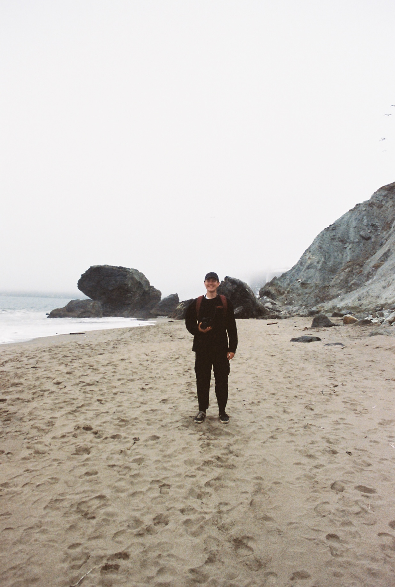

Research
Publications, datasets, and article details on climate-phenology methods.
Explore researchI am a PhD student and DOE CSGF Fellow at the University of Colorado Boulder. I develop Bayesian and simulation-based methods to study how climate and uncertainty shape biological systems, with a focus on phenology in alpine and agricultural ecosystems.

Publications, datasets, and article details on climate-phenology methods.
Explore researchRecent updates, conference activity, awards, and manuscript milestones.
Read newsA selection of field and travel photography from film work.
View film